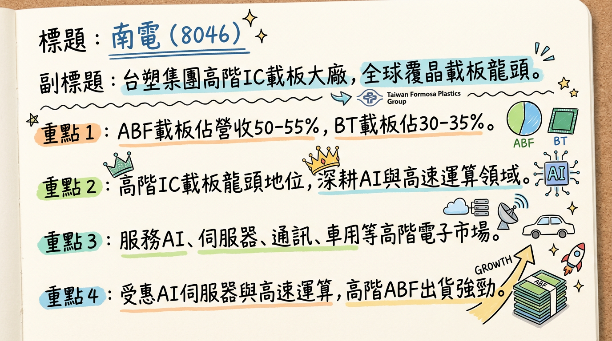
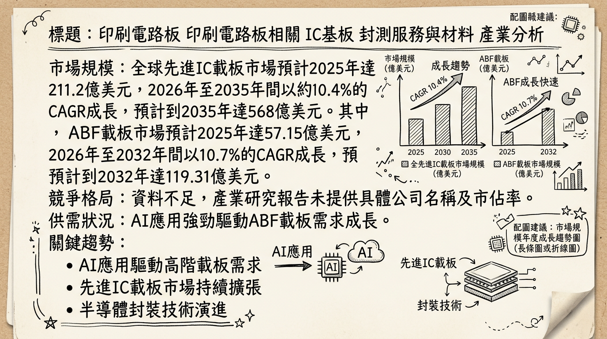
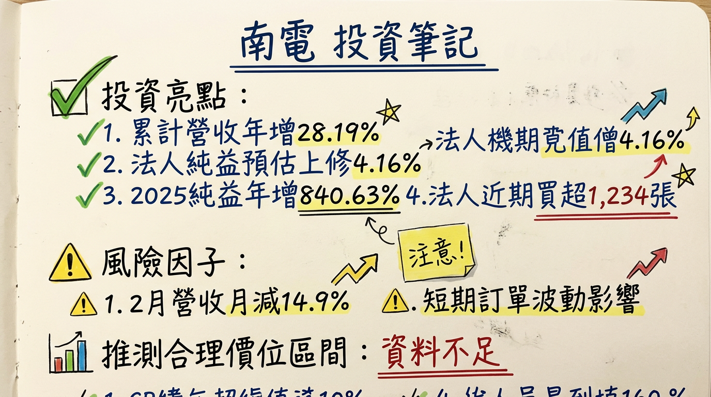

8046 南電 深度研究報告
一句話摘要
南電受惠2025年載板產業築底復甦，第四季獲利強勁翻揚。展望2026年，憑藉AI伺服器、HPC及ASIC晶片帶動高階ABF載板強勁需求，加上T-Glass關鍵材料短缺支撐載板報價上揚，預期營運將迎來爆發性成長，法人平均預估EPS有望達7.45元至15.65元。
公司概覽
南電（8046）為台塑集團旗下高階IC載板大廠，在全球覆晶載板（FC載板）領域具備龍頭地位。其核心產品主要包括ABF載板、BT載板以及高階印刷電路板（HDI、剛柔板），廣泛應用於AI晶片、伺服器、通訊設備及車用電子等高階領域。
產品線與營收結構 (2026年1月資料)
| 產品類別 | 營收比重 (約) | 主要應用領域 |
|---|
| ABF載板 | 50%～55% | AI GPU、伺服器CPU、先進網通ASIC、AI PC |
| BT載板 | 30%～35% | 手機PMIC、DDR、車用MCU、記憶體應用 |
| 高階HDI等 | 10%～20% | 高階印刷電路板 (HDI)、剛柔板等，未明確佔比 |
南電的產能據點包括台灣桃園龜山、桃園平鎮，以及中國廣東東莞和崑山昆盈。目前未找到2025-2026年各製造基地營收貢獻比例的最新資料。
所屬細分產業與相關題材
- IC載板（IC Substrate）與高階印刷電路板（HDI）
- AI人工智慧與高速運算（HPC）：AI伺服器、AI PC、高速運算等高階ABF載板。
- 800G交換器與ASIC（客製化晶片）：AI ASIC、800G交換器等關鍵專案。預計ASIC相關營收占比在2026年下半年突破一成。
- 載板漲價趨勢：受上游T-Glass等材料供應緊張影響，2025年已多次調漲BT與ABF載板價格，漲價動能預計延續至2026年。
- 記憶體應用需求：BT載板受記憶體應用需求復甦帶動。
核心競爭優勢
高階載板技術領先地位：南電在全球覆晶載板（FC載板）領域具備龍頭地位，尤其在高階ABF載板領域技術實力雄厚，能滿足AI GPU、伺服器CPU、先進網通ASIC等嚴苛要求。
AI/HPC市場深度佈局：積極切入AI伺服器、AI PC、800G交換器及多個ASIC專案，是AI高效能運算載板的重要供應商，產品能見度高。
供應鏈韌性與材料優勢：隸屬台塑集團，集團內南亞自製T-Glass已於2025年10月取得認證，並自2026年2月起逐步增加供給，有助於緩解關鍵材料T-Glass的供應緊張，相較同業具備更穩定的料源優勢。
彈性報價策略：相較於多採長期合約的競爭對手，南電非長期合約比例較高，能更快速地反映市場漲價趨勢，轉嫁成本並提升毛利率。
客戶專案擴展潛力：2026年將啟動新ASIC客戶出貨，並規劃下半年切入第二家美系雲端服務供應商（CSP）ASIC供應鏈，為未來成長提供強勁動能。
財務分析
月營收趨勢
南電的月營收在2025年底至2026年初呈現穩健的年增長，顯示營運持續復甦。
| 月份 | 金額 (新台幣億元) | 月增率 MoM | 年增率 YoY |
|---|
| 2026年2月 | 31.66 | -14.90% | 12.84% |
| 2026年1月 | 37.20 | -5.18% | 44.98% |
| 2025年12月 | 39.24 | 11.02% | 46.57% |
| 2025年11月 | 35.34 | -4.64% | 37.14% |
| 2025年10月 | 37.06 | 4.72% | 41.68% |
| 2025年9月 | 35.39 | -7.04% | 19.22% |
季度數據
南電在2025年第四季的營運表現強勁，獲利大幅提升，顯示產業景氣已走出谷底。
* 季營收：新台幣111.64億元，季增1.8%，年增41.86%。
* 毛利率：12.52%。
* 營業利益率：8.63%。
* EPS：1.86元，創近十季新高。
年度趨勢
2025年南電營運大幅好轉，營收與獲利皆有顯著成長，預期2026年將延續成長軌道。
* 全年營收：新台幣322.83億元。
* EPS：0.32元。
* 全年營收：新台幣401.73億元，年增24.44%。
* 歸屬母公司淨利：19.47億元，年增840.63%。
* EPS：3.01元。
* 全年營收：分析師預估約528.31億元至706.10億元。
* EPS：CMoney法人機構平均預估介於7.45元至15.65元之間 (2026年3月3日)。
法說會重點
南電最近一次法說會資訊未明確標示日期。然而，根據財報發布後的市場分析及管理層對未來的展望，可整理出以下重點：
* 南電將2026年營運動能聚焦於高階載板，尤其是ABF載板被視為核心項目。
* 受益於AI伺服器帶動的高階ABF載板需求以及BT載板價格回穩，營運前景看好。
* AI GPU、ASIC與800G交換器進入量產節奏下，載板需求強勁。
* ABF與BT載板出貨組合將持續改善，產品報價走揚使全年營運明顯翻轉。
* 上游T-Glass玻纖布缺貨與原物料漲價，導致BT與ABF載板價格同步走揚，可能出現供應缺口。
* 預計2026年上半年ABF載板每季平均報價維持5%以上成長；BT載板同期報價預計成長5%～10%。
* 原料緊張情況預計將延續至2026年下半年，有利於價格條件。
* 目前未找到2025-2026年關於具體產能利用率與資本支出金額的最新資料。
* 2026年第一季營收有望淡季不淡。
* 法人看好南電2026年營運可望延續成長軌道，ABF受益於AI ASIC、800G、AI PC等應用擴增，出貨與ASP雙雙提升。
* 公司加速推動多元材料認證與新世代載板量產，為2026年營收與毛利添動能。
券商觀點
多家券商看好南電受惠於AI伺服器與高階載板需求，紛紛上調目標價與評等。
券商目標價與評等
| 券商名稱 | 目標價 (新台幣元) | 評等 | 日期 |
|---|
| 中國信託綜合證券 | 700 | 看多 | 2026年2月26日 |
| 高盛證券 | 655 | 買進 | 2026年2月3日 |
| 美系外資 (未具名) | 515 / 490 | 買進 | 2026年2月25日 |
| FactSet (平均) | 350 | - | 2026年2月23日 |
| FactSet (平均) | 340 | - | 2026年2月3日 |
* FactSet最新調查：中位數2.57元 (2026年2月23日)。曾於2026年2月3日由2.51元上修至2.65元，後再小幅下修。
* 2026年1月21日券商報告提及，有2家券商預估2025年EPS落在2.6～3.25元間。
* 中國信託綜合證券：預估2026年度EPS約13.05元 (2026年2月26日)。
* CMoney法人機構平均預估：2026年度EPS介於7.45～15.65元之間 (2026年3月3日)。
* FactSet最新調查：平均預估9.93元，中位數9.13元。
* 2026年1月21日券商報告提及，有2家券商預估2026年EPS落在12.64～13.58元間。
* 法人預估南電2026年度稅後純益較上月預估調升4.16% (2026年3月3日)，顯示對獲利展望更加樂觀。
* 多家外資券商看好AI伺服器需求帶動的高階ABF載板供需缺口擴大，以及南電在ASIC專案中的供應優勢，紛紛上調南電評等至「買進」或「強力買進」。
財報深度分析
利潤率趨勢
南電的利潤率在2025年呈現顯著改善，尤其在第四季。這主要得益於產品組合優化、載板報價上漲以及市況回溫。
| 年度/季度 | 毛利率 (%) | 營業利益率 (%) | 稅後淨利率 (%) |
|---|
| 2024年Q1 | -5.36 | -11.18 | -2.15 |
| 2024年Q2 | 2.26 | -2.55 | 1.46 |
| 2024年Q3 | 5.85 | 1.36 | 0.64 |
| 2024年Q4 | 0.22 | -4.96 | 2.27 |
| 2024年全年 | 1.1 | - | - |
| 2025年Q1 | 5.09 | 0.39 | 2.45 |
| 2025年Q2 | 8.02 | 3.82 | -1.96 |
| 2025年Q3 | 9.57 | 5.66 | 6.61 |
| 2025年Q4 | 12.52 | 8.63 | 10.76 |
| 2025年全年 | 9.08 | 4.93 | 4.85 |
：
- 產品組合與價格：2025年營運走出谷底，主要動能來自AI伺服器帶動的高階ABF載板需求以及BT載板價格回穩。BT載板自2025年7月起調漲價格，ABF載板也陸續調價，預期2026年首季仍有漲幅空間。高階ABF載板於2026年上半年期間，每季平均報價預估維持5％以上成長；BT載板於同期報價則預計成長5％～10％，有助毛利率持續墊高。
- 成本轉嫁：儘管上游T-Glass等關鍵材料供應緊張導致價格高漲，但南電在高階應用中具備供應優勢，擁有議價與成本轉嫁能力。為強化產能穩定度，南電於2026年間推進原材料第二與第三來源認證作業，提升供應彈性。
- 市況回溫與新台幣貶值：受惠市況回溫、漲價效益及新台幣回貶，南電2025年第三季稅後淨利強彈。
存貨與營運週轉
南電的存貨週轉天數在2025年整體呈現健康趨勢，顯示庫存去化狀況良好。
* 2025年Q1：48.05天
* 2025年Q2：46.34天
* 2025年Q3：42.82天
* 2025年Q4：45.15天
* 2025年Q1：76.44天
* 2025年Q2：71.10天
* 2025年Q3：71.80天
* 2025年Q4：76.97天
- 營運週轉天數 (應收帳款週轉天數 + 存貨週轉天數)：2025年Q4為122.12天。
- 存貨異常備料現象：目前沒有明確報導指出南電有異常堆積或備料現象。然而，考量到T-Glass等關鍵材料長期供應吃緊，公司為確保供貨穩定，進行戰略性備料的可能性存在。
資本支出與產能
目前未找到南電近3年具體的資本支出金額與趨勢、未來資本支出計畫與預計新增產能、以及折舊攤銷趨勢的詳細數據。但產業趨勢顯示，2026年營運主軸將轉向結構調整後的放量，ABF載板隨高速交換器、ASIC與AI相關應用專案推進，出貨量與ASP結構預期同步改善。高階玻纖布T-glass新產能最快需至2027年下半年才會明顯開出，意味著2026～2027年載板供應仍處偏緊格局，有利高階載板價格維持。
其他財報重點
* 2024年Q4: 27.79%
* 2025年Q1: 27.42%
* 2025年Q2: 26.77%
* 2025年Q3: 25.35%
* 2025年Q4: 24.64%
南電的負債比率在2025年呈現下降趨勢，且在ABF載板產業中排名第一，顯示財務結構相對穩健。
- 業外收支：2025年第三季業外顯著轉盈達2.86億元，主因新台幣回貶帶來匯兌收益。2025年全年業外收益驟減74.6%，主因利息及其他收入減少、新台幣強升導致匯損影響。
股權異動
- 董監事/大股東申報轉讓紀錄：目前未找到2024-2026年南電董監事/大股東申報轉讓的具體紀錄。
- 庫藏股買回紀錄：目前未找到2024-2026年南電庫藏股買回的紀錄。
- 可轉換公司債（CB）：目前未找到2024-2026年南電發行可轉換公司債的紀錄。
- 現金增資或減資計畫：目前未找到2024-2026年南電現金增資或減資計畫的紀錄。
- 股利政策：
* 2025年度（將於2026年發放）：董事會決議每股配發現金股利2元，配發率約66%。
* 2024年度（已於2025年發放）：每股現金股利1元。
產業分析
市場規模與成長率
全球IC載板市場在AI與HPC需求驅動下呈現強勁成長態勢。
* 全球先進IC載板市場規模在2025年達到211.2億美元，預計2026年將達到231億美元，並在2026年至2035年間以約10.4%的複合年增長率（CAGR）成長，預計到2035年將達到568億美元。
* 全球ABF載板市場規模在2025年預計為57.15億美元，並在2026年至2032年間以10.7%的CAGR成長，預計到2032年將達到119.31億美元。摩根士丹利預計，受AI強勁驅動，ABF載板市場產值在2025年至2030年間將加速成長，年複合成長率（CAGR）達16.1%。
* 未找到2025-2026年BT載板全球市場規模及CAGR的具體數據。但BT載板受記憶體需求回升帶動，預期2026年記憶體市場將出現供給短缺與價格上漲，進一步支撐BT相關產品的漲價。
供需狀況
高階ABF載板市場正進入新的上升週期，呈現顯著的供不應求。
- ABF載板：由於AI與伺服器需求強勁成長，ABF載板的供應吃緊情況預計逐月惡化。高盛預計供需缺口將在2026年下半年達到10%，並在2027年擴大至21%，2028年進一步達到42%。2025年生成式AI伺服器的大規模導入導致ABF載板供給吃緊，ABF面板的交期超過35週，現貨價格較2024年合約價溢價高達25%。
- BT載板：也因T-Glass原料成本上升而進行調漲，部分品項單月漲幅甚至達25%。預計2026年BT載板價格將會隨之上漲。
- 關鍵材料T-Glass：低損耗玻纖布供應短缺預計將持續到2026年底，甚至可能到2027年日東紡新產能開出後才能緩解，這加劇了載板的供需吃緊。
產業平均毛利率水準
儘管缺乏整個IC載板產業的平均毛利率具體數據，但由於ABF載板的漲價潮及產品組合優化，預期載板廠商毛利率將顯著修復，重新站回25%至30%的高標區間。欣興預期，由於AI產品比重增加，產品組合優化，2026年首季毛利率將優於2025年第四季的15.77%。
競爭格局
若以企業總部所在地為統計基準，台灣為全球最大載板供應業者（33.5%）。
全球前五大載板公司及市佔率 (2024年資料)
| 公司名稱 | 總部所在地 | 2024年全球市佔率 |
|---|
| 欣興（Unimicron） | 台灣 | 17.6% |
| 三星電機（SEMCO） | 韓國 | 12.0% |
| Ibiden | 日本 | 10.5% |
| 南電（Nanya PCB） | 台灣 | 6.9% |
| Shinko | 日本 | 6.9% |
| 項目 | 南電 (8046) | 欣興 (3037) | Ibiden | 景碩 (3189) |
|---|
| 技術與產品 | 佈局AI伺服器、800G交換器、ASIC；2026年ASIC佔比估達8%。 | 全球ABF龍頭，16+層高階佔ABF營收60%，AI相關逾50%；Nvidia Blackwell次供、Rubin 3成市佔；ASIC 7成市佔。 | AI載板Tier 1，客戶結構相似；產能、客製化意願可能限制ASIC份額。 | - |
| 產能 | 南亞自製T-Glass (2025/10認證，2026/2增供)；與日東紡合作至2027年織造20%玻纖布，確保料源。 | 2025/206億、2026/190億資本支出；光復一廠擴產提升18%。 | 2027年開出新產能，較現有增150%。 | - |
| 客戶 | AI伺服器、高速交換器、ASIC專案客戶；雲端服務供應商ASIC平台；尚未切入Nvidia GPU供應鏈。 | Nvidia (GPU AI伺服器)；Google、Meta等ASIC晶片訂單。 | 類似欣興。 | - |
| 價格 | 長期合約較少，能快速反映市場。2025Q3 BT載板漲25%，協調再漲30%；ABF低階產品2025Q3漲價。 | 多採長期合約，漲幅較慢。BT載板2025Q4漲價，ABF載板2026年起新價格出貨。 | - | 預計2026Q1/Q2 ABF/BT載板維持季漲3%～5%。 |
| 公司名稱 | 2025年營收 (億元) | 2025年EPS (元) | 2025年Q4毛利率 (%) | 2026年EPS預估 (元) (法人平均) |
|---|
| 欣興 | 1312.4 | 4.38 | 15.77 | 14.79 (摩根大通) |
| 南電 | 401.73 | 3.01 | 12.52 | 7.45-15.65 (CMoney) |
| 景碩 | - | - | - | 摩根士丹利預估2026年EPS約11元 |
產業趨勢
AI人工智慧與高速運算（HPC）晶片需求爆發：
* 具體影響：AI晶片需求推動載板朝「大面積（80x80mm提升至100x100mm）、高層數（14-16層提升至22-24層）、細線路」發展。這導致良率下降，大幅推升T-Glass等關鍵材料消耗量，使ABF載板需求轉向更高產值、更高技術門檻的高效能運算領域。AI伺服器出貨量預估2025年達315萬台，年增83%。
先進封裝技術演進（CoWoS、CoPoS、Chiplet、玻璃基板）：
* 具體影響：台積電積極推進CoWoS與新一代CoPoS，需要先進IC載板提供訊號完整性、高效功耗和散熱能力。Chiplet架構、無核心中介層和TSV技術發展，對IC載板設計製造提出更高要求。玻璃基板技術預計2020年代後期商用化，可能成為超高密度封裝ABF載板的戰略替代方案。
T-Glass低損耗玻纖布等關鍵材料供給吃緊：
* 具體影響：T-Glass是高階ABF與BT載板重要原料，目前供應極度吃緊，由少數美、日大廠壟斷，交期自8週延長至30週以上，價格大漲三成，預計短缺狀況將至少持續到2026年第四季，甚至可能到2027年。材料短缺直接推動ABF和BT載板報價調升，有利於載板廠商轉嫁成本並修復毛利率。
對南電而言的具體機會和威脅
*
AI/HPC強勁需求：積極佈局AI伺服器、高速交換器與ASIC專案，搭上AI晶片順風車，高階產品能見度提升。
* 產品組合優化與價格彈性：非長約與現貨訂單比例較高，能最快反映市場行情，在載板漲價潮中受惠程度較大。
* T-Glass料源穩定性：擁有集團內南亞自製T-Glass支援，並與日東紡合作，有助於確保關鍵原料穩定供應。
* 新專案啟動：2026年啟動新ASIC客戶專案，結合雲端服務供應商ASIC平台放量，預計將進一步拉升高階ABF出貨量。
*
AI GPU市場競爭：尚未成功切入輝達（Nvidia）GPU供應鏈，在高階GPU載板市場市佔可能受限於主要競爭對手。
* 製造複雜性與良率挑戰：載板尺寸增大、層數增加和線路微細化，製造難度提高，可能導致良率下降。
* 技術轉型挑戰：先進封裝技術快速演進，需要持續投入研發以保持技術領先。
* 客戶集中度：主要客戶涵蓋Broadcom、AMD(含Xilinx)與Marvell，合計營收比重約六成，客戶訂單變動可能影響營運。
相關投資題材
- AI人工智慧與高速運算（HPC）：AI伺服器GPU、伺服器CPU、先進網通ASIC等高階晶片是ABF載板的主要應用，南電直接受惠。
- HBM（高頻寬記憶體）：HBM需求攀升將帶動記憶體市場成長，進而帶動BT載板需求，南電BT載板業務間接受惠。
- 電動車與車用電子：汽車產業對先進IC載板需求不斷成長，BT載板也應用於車用MCU等產品，為長期潛在成長動能。
近期催化劑
利多事件
- 2025年財報表現亮眼 (2026/02/25)：全年合併營收達401.73億元，年增24.44%；歸屬母公司淨利19.47億元，年增840.63%，EPS 3.01元。2025年第四季單季獲利達12.02億元，EPS 1.86元，單季獲利賺贏去年前三季總和，顯示營運已走出谷底並加速復甦。
- 載板報價上漲與供需吃緊 (2026年1月起)：ABF與BT載板價格傳出漲價消息，T-Glass等關鍵材料供應短缺加劇供需缺口，有利於載板廠商轉嫁成本、提升毛利率。
- AI/HPC需求超乎預期 (2026年1月起)：AI高效能運算需求強勁，加上新客戶、新專案導入，帶動高階ABF載板出貨量及ASP雙升。
- 法人調升評等與目標價 (2026年2月起)：多家外資券商看好AI伺服器需求帶動的高階ABF載板供需缺口擴大，以及南電在ASIC專案中的供應優勢，紛紛上調評等至「買進」或「強力買進」，目標價上看490元至700元。
- 關鍵材料料源強化 (2026年2月起)：南亞自製T-Glass已於2025年10月認證，並自2026年2月起逐步增加供給，與日東紡合作至2027年，強化供應穩定性。
- 2026年1月、2月營收公告 (2026/03/03)：累計2026年前2月營收約68.87億元，年增高達28.19%，顯示仍處於成長軌道。
- 現金股利發放 (2026/02/25)：董事會決議2025年每股配發現金股利2元，配發率約66%。
利空事件
- 2026年2月營收月減 (2026/03/03)：2026年2月合併營收為31.66億元，月減14.9%。法人指出，月減可能為短期訂單調整或工作天數影響，但年增顯示仍處於成長軌道。
- T-Glass材料長期供應緊張：儘管南電有集團內部支援，但全球高階T-Glass材料由少數大廠壟斷，供應緊張預計將持續到2027年，可能限制整體產業擴產速度。
- 客戶集中度風險：主要客戶涵蓋Broadcom、AMD(含Xilinx)與Marvell，合計營收比重約六成，客戶訂單變動仍是潛在風險。
⭐ 成長動能時間軸
- 2025年10月：南電所屬集團南亞自製的T-glass取得認證。
- 2025年第四季：營運明顯翻轉，獲利達12.02億元，季營收111.64億元。BT載板價格開始調漲。
- 2026年第一季：
* 預計開始啟動ASIC新客戶的出貨計畫。
* 既有大客戶將量產1.6T的網通交換器晶片，ABF載板出貨量預期提升。
* ABF載板報價預估每季平均維持5%以上成長；BT載板報價預計成長5％～10％。
* 預計營收有望淡季不淡。
- 2026年2月起：南亞自製的T-glass逐步增加供給，強化材料供應穩定度。
- 2026年上半年：ABF載板每季平均報價維持5％以上成長；BT載板同期報價預計成長5％～10％。
- 2026年下半年：
* 市場預估ABF載板供需缺口將達10%。
* 規劃逐步切入第二家美系雲端服務供應商（CSP）ASIC供應鏈。
* ASIC產品全年營收占比有機會逼近1成。
* AI PC換機潮啟動，有利於ABF載板需求。
* 加速推動多元材料認證與新世代載板量產。
* ABF載板受益於AI ASIC、800G、AI PC等應用擴增，出貨與ASP雙升。
* BT載板調價效益延續，受惠於記憶體需求持續成長。
* 參與Amazon、Meta與Microsoft等雲端業者自研ASIC專案。
- 2025年至2028年：ABF載板年複合成長率將達70%。AI相關需求占總體ABF需求比例將從2025年的24%提升至2028年的46%。
- 2026年下半年至2027年：高階玻纖布T-glass新產能最快至此時段才會明顯開出，意味載板供應仍處偏緊格局。
- 至2027年：南亞與日本日東紡合作，協助織造其約20%的玻纖布。
- 2027年：Ibiden計畫開出新產能，較現有增加150%。
- 2028年：ABF載板供需缺口預計擴大至42%。
2026 展望
成長動能
AI/HPC核心驅動：AI伺服器、AI PC、800G高速交換器以及美系CSP自研ASIC晶片需求強勁，南電高階ABF載板出貨量與平均銷售單價（ASP）將雙雙提升。
新客戶/專案導入：2026年第一季啟動ASIC新客戶出貨，下半年切入第二家美系CSP ASIC供應鏈，預計ASIC營收佔比將逼近1成，開拓新的成長空間。
產品報價持續上揚：受上游T-Glass低損耗玻纖布長期供應吃緊影響，ABF載板與BT載板價格在2026年仍有漲價空間，有助於毛利率持續擴張。
集團內部材料協同：南亞自製T-Glass已獲認證並將於2026年2月起增加供給，加上與日東紡的合作，確保關鍵原料的穩定供應，降低生產風險。
BT載板需求復甦：記憶體市場回溫及5G天線模組、車用MCU等應用增長，帶動BT載板產能利用率提升與調價效益延續。
風險
關鍵材料供應不確定性：T-Glass等高階材料供應緊張，儘管南電有應對策略，但若缺料狀況惡化超乎預期，仍可能限制產能擴張與出貨。
AI GPU市場競爭：南電尚未成功切入Nvidia GPU供應鏈，在高階GPU載板市場的市佔可能相對受限於主要競爭對手，若AI加速器架構發生重大變革，可能帶來不確定性。
全球總經情勢波動：全球經濟放緩、高通膨、利率政策變化等總體經濟因素，可能影響終端需求，進而傳導至IC載板產業。
地緣政治與貿易摩擦：作為全球化供應鏈的一環，任何國際貿易政策變化或地緣政治風險，都可能對南電的營運造成潛在影響。
技術迭代與良率挑戰：AI晶片對載板要求越來越高（大面積、高層數、細線路），製造複雜度增加可能帶來良率挑戰，影響生產成本與獲利。
投資結論
南電（8046）在經歷2025年觸底反彈後，正迎來由AI與HPC需求引領的強勁成長週期。以下是我們的投資結論：
AI/HPC帶動高階需求爆發：南電作為高階ABF載板龍頭，積極佈局AI伺服器、800G交換器及ASIC專案，搭上AI浪潮核心。2026年新ASIC客戶和1.6T網通交換器晶片的量產，將為營收帶來顯著增長動能。AI相關需求占ABF總需求的比例預計從2025年的24%增至2028年的46%，為南電提供長期成長基礎。
載板漲價趨勢與毛利率修復：受惠於T-Glass等關鍵材料供給吃緊，ABF載板每季報價預估平均成長5%以上，BT載板成長5-10%，有利於公司轉嫁成本、優化產品組合，預計毛利率將從2025年Q4的12.52%進一步提升。
財務體質穩健與效率改善：2025年第四季獲利單季賺贏前三季總和，EPS達1.86元，顯示營運效率顯著改善。負債比率持續下降至24.64%，財務結構穩健，為未來擴張提供良好基礎。
關鍵料源確保競爭優勢：集團內南亞T-Glass的自製化及與日東紡的策略合作，有效緩解了高階材料的供應瓶頸，相較於缺乏此類資源的競爭者，南電在供應鏈穩定性上具備獨特優勢。
法人看好成長潛力：多家外資機構上調南電評等與目標價，法人平均預估2026年EPS區間為7.45元至15.65元，顯示市場對其未來獲利能力有高度期待。
綜合上述分析，考量AI產業帶來的結構性成長機會、載板供需失衡下的價格上漲動能，以及南電在技術和供應鏈上的競爭優勢，我們給予南電「買進」評等。
建議目標價區間：新台幣 480元 至 680元。
本報告由 AI 自動產生，資料來源為公開網路資訊，僅供參考，不構成投資建議。產生時間：2026-03-06 14:36
📊 資訊卡


